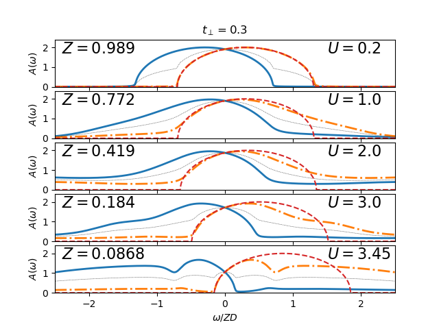

Dimer Mott transition Scaled quantities¶
Follow the spectral function from the correlated metal into the dimer Mott insulator. The spectral functions is decomposed into the bonding and anti-bonding contributions to make it explicit that is is a phenomenon of the quasiparticles opening a band gap.
# author: Óscar Nájera
from __future__ import division, absolute_import, print_function
import numpy as np
import matplotlib.pyplot as plt
from scipy.interpolate import splrep, splev
import dmft.common as gf
from dmft import ipt_imag
import dmft.dimer as dimer
def ipt_u_tp(urange, tp, beta, w):
tau, w_n = gf.tau_wn_setup(dict(BETA=beta, N_MATSUBARA=2**12))
giw_d, giw_o = dimer.gf_met(w_n, 0., tp, 0.5, 0.)
w_set = list(np.arange(0, 20, 1))
w_set = w_set + list(np.arange(20, 120, 2))
w_set = w_set + list(np.arange(120, 512, 8))
lss = []
for u_int in urange:
giw_d, giw_o, loops = dimer.ipt_dmft_loop(
beta, u_int, tp, giw_d, giw_o, tau, w_n, 1e-9)
g0iw_d, g0iw_o = dimer.self_consistency(
1j * w_n, 1j * giw_d.imag, giw_o.real, 0., tp, 0.25)
siw_d, siw_o = ipt_imag.dimer_sigma(
u_int, tp, g0iw_d, g0iw_o, tau, w_n)
ss = gf.pade_continuation(
1j * siw_d.imag + siw_o.real, w_n, w + 0.0005j, w_set) # A-bond
lss.append(ss.real - 1j * np.abs(ss.imag))
return lss
def low_en_qp(ss):
glp = np.array([0.])
sigtck = splrep(w, ss.real, s=0)
sig_0 = splev(glp, sigtck, der=0)[0]
dw_sig0 = splev(glp, sigtck, der=1)[0]
quas_z = 1 / (1 - dw_sig0)
return quas_z, sig_0, dw_sig0
w = np.linspace(-3, 3, 2**12)
BETA = 512.
tp = 0.3
uranget3 = [0.2, 1., 2., 3., 3.45]
lsst3 = ipt_u_tp(uranget3, tp, BETA, w)
def plot_row(urange, tp, lss, ax, labelx):
for i, (U, ss) in enumerate(zip(urange, lss)):
gss = gf.semi_circle_hiltrans(w - tp - ss)
imgss = -gss.imag
imgsa = imgss[::-1]
quas_z, sig_0, dw_sig0 = low_en_qp(ss)
tpp = (tp + sig_0) * quas_z
llg = gf.semi_circle_hiltrans(w + 1e-8j - tpp, quas_z) * quas_z
ax[i].plot(w / quas_z, imgsa, 'C0', lw=2)
ax[i].plot(w / quas_z, imgss, 'C1-.', lw=2)
ax[i].plot(w / quas_z, (imgss + imgsa) / 2, 'k:', lw=0.5)
ax[i].plot(w / quas_z, - llg.imag, "C3--", lw=1.5)
ax[i].text(labelx, 1.7,
"$Z={:.3}$".format(quas_z), size=16)
ax[i].text(1.5, 1.7,
"$U={}$".format(U), size=16)
ax[i].set_yticks(np.arange(3))
ax[i].set_xticks(np.arange(-3, 4))
ax[i].set_xlabel(r'$\omega/ZD$')
ax[i].set_xlim([-2.5, 2.5])
ax[i].set_ylim([0, 2.4])
plt.rcParams['figure.autolayout'] = False
plt.rcParams["axes.grid"] = False
fig, ax = plt.subplots(5, 1, sharex=True, sharey=True)
plot_row(uranget3, 0.3, lsst3, ax, -2.4)
ax[0].set_title(r'$t_\perp=0.3$')
for a in ax:
a.set_ylabel(r'$A(\omega)$')
plt.subplots_adjust(hspace=0.09)
# plt.savefig('dimer_transition_spectra_scaling.pdf')
# plt.close()
Total running time of the script: ( 0 minutes 23.488 seconds)